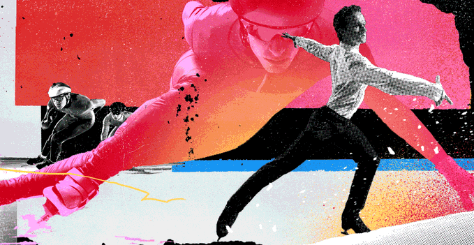

Robert Zubrin
@robert_zubrin . Jul 31
Speed skating is underway at the National Speed Skating Oval. The men compete in the 500m, 1000m, 1500m, 5000m, 10,000m, Mass Start and Team Pursuit. The women compete in the 500m, 1000m, 15000m, 3000m, 5000m, Mass Start and Team Pursuit. Keep it here for all the action from the Ice Ribbon.

Speed Skating at the Winter Olympics
Speed skating is underway at the National Speed Skating Oval. The men compete in the 500m, 1000m, 1500m, 5000m, 10,000m, Mass Start and Team Pursuit. The women compete in the 500m, 1000m, 15000m, 3000m, 5000m, Mass Start and Team Pursuit. Keep it here for all the action from the Ice Ribbon.